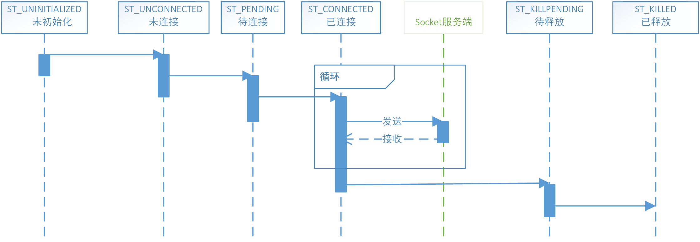
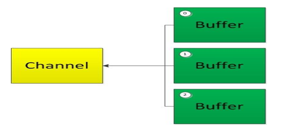
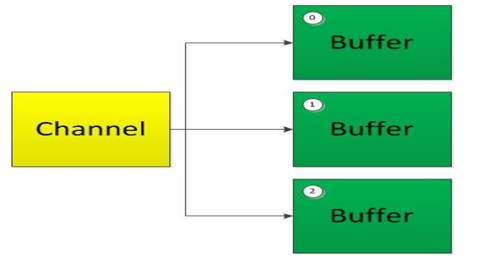

原文连接:https://www.cnblogs.com/Jack-Blog/p/12061595.html
目录
NIO-SocketChannel源码分析
目录
NIO-概览
NIO-Buffer
NIO-Channel
NIO-Channel接口分析
NIO-SocketChannel源码分析
NIO-FileChannel源码分析
前言
本来是想学习Netty的，但是Netty是一个NIO框架，因此在学习netty之前，还是先梳理一下NIO的知识。通过剖析源码理解NIO的设计原理。
本系列文章针对的是JDK1.8.0.161的源码。
上一篇介绍了Channel的接口，本篇对SocektChannel的源码进行解析。
ServerSocketChannelImpl
创建ServerSocketChannel
我们通过ServerSocketChannel.open()创建一个ServerSocketChannel，它实际通过provider创建。
public abstract class ServerSocketChannel extends AbstractSelectableChannel implements NetworkChannel
{
protected ServerSocketChannel(SelectorProvider provider) {
super(provider);
}
public static ServerSocketChannel open() throws IOException {
return SelectorProvider.provider().openServerSocketChannel();
}
...
}在首次创建时，创建初始化SelectorProvider对象。
public static SelectorProvider provider() {
synchronized(lock) {
return provider != null ? provider : (SelectorProvider)AccessController.doPrivileged(new PrivilegedAction<SelectorProvider>() {
public SelectorProvider run() {
if (SelectorProvider.loadProviderFromProperty()) {
return SelectorProvider.provider;
} else if (SelectorProvider.loadProviderAsService()) {
return SelectorProvider.provider;
} else {
SelectorProvider.provider = DefaultSelectorProvider.create();
return SelectorProvider.provider;
}
}
});
}
}具体
SelcetProvider实现在《NIO-Selector》一节讲解。
privoder创建完成后通过openServerSocketChannel创建ServiceSocketChannel。
public ServerSocketChannel openServerSocketChannel() throws IOException {
return new ServerSocketChannelImpl(this);
}在ServerSocketChannelImpl静态构造函数中会进行一些初始化操作。
class ServerSocketChannelImpl extends ServerSocketChannel implements SelChImpl
{
private static NativeDispatcher nd;
static {
IOUtil.load();
initIDs();
nd = new SocketDispatcher();
}
private static native void initIDs();
...
}初始化
通过静态构造函数在首次创建时通过IOUtil.load()初始化一些必要的参数。IOUtil的静态构造方法来加载net和nio的类库。
public static void load() { }
static {
java.security.AccessController.doPrivileged(
new java.security.PrivilegedAction<Void>() {
public Void run() {
//加载net和nio的库
//net主要是应用层的一些协议实现，如FTP,Http
System.loadLibrary("net");
System.loadLibrary("nio");
return null;
}
});
initIDs();
IOV_MAX = iovMax();
}通过System.loadLibrary加载后就可以调用该类的native方法。
initIDs是一个native方法，在网上搜了下也没有找到相关资料，因此只能到native的源码中看。这里对windows下的native源码进行说明，在native\sun\nio\ch\ServerSocketChannelImpl.c可以看到ServerSocketChannelImpl的initIDs的代码
Java_sun_nio_ch_ServerSocketChannelImpl_initIDs(JNIEnv *env, jclass cls)
{
//查找类型FileDescriptor
cls = (*env)->FindClass(env, "java/io/FileDescriptor");
//获取class的字段fd，I是int类型的意思，将字段id保存到fd_fdID,以后要获取该字段就可以直接用fd_fdID去获取
fd_fdID = (*env)->GetFieldID(env, cls, "fd", "I");
//查找InetSocketAddress类型
cls = (*env)->FindClass(env, "java/net/InetSocketAddress");
//创建一个引用指向cls，后面可以通过cls操作这个java对象
isa_class = (*env)->NewGlobalRef(env, cls);
//获取构造函数的方法id,(Ljava/net/InetAddress;I)V 是反汇编后的构造函数签名
isa_ctorID = (*env)->GetMethodID(env, cls, "<init>",
"(Ljava/net/InetAddress;I)V");
}
将fd_fdID、isa_ctorID和isa_class保存后保存就省的在查找了。
FindClass:是查找指定的类型GetFieldID:获取类型字段idNewGlobalRef:创建一个引用GetMethodID:获取方法id
关于JNI的字段和方法解释可以看JNI GetFieldID和GetMethodID函数解释及方法签名
我们可以通过javap查看类的方法签名,通过-p显示所有类和成员，-l显示行号和本地变量表，-c对代码进行反汇编。
C:\Program Files\Java\jdk1.8.0_161\bin>javap
用法: javap <options> <classes>
其中, 可能的选项包括:
-help --help -? 输出此用法消息
-version 版本信息
-v -verbose 输出附加信息
-l 输出行号和本地变量表
-public 仅显示公共类和成员
-protected 显示受保护的/公共类和成员
-package 显示程序包/受保护的/公共类
和成员 (默认)
-p -private 显示所有类和成员
-c 对代码进行反汇编
-s 输出内部类型签名
-sysinfo 显示正在处理的类的
系统信息 (路径, 大小, 日期, MD5 散列)
-constants 显示最终常量
-classpath <path> 指定查找用户类文件的位置
-cp <path> 指定查找用户类文件的位置
-bootclasspath <path> 覆盖引导类文件的位置在命令行输入javap -p -c -l java.net.InetSocketAddress查看构造函数的方法签名为Method "<init>":(Ljava/net/InetAddress;I)V
C:\Program Files\Java\jdk1.8.0_161\bin>javap -p -c -l java.net.InetSocketAddress
Compiled from "InetSocketAddress.java"
public class java.net.InetSocketAddress extends java.net.SocketAddress {
private final transient java.net.InetSocketAddress$InetSocketAddressHolder holder;
private static final long serialVersionUID;
...
public java.net.InetSocketAddress(int);
Code:
0: aload_0
1: invokestatic #215 // Method java/net/InetAddress.anyLocalAddress:()Ljava/net/InetAddress;
4: iload_1
5: invokespecial #219 // Method "<init>":(Ljava/net/InetAddress;I)V
8: return
LineNumberTable:
line 166: 0
line 167: 8
...IOV_MAX用于获取最大的可一次性写入的缓存个数，当我们通过IOUtils.write一次性向Channel写入多个Buffer时，会有Buffer最大数量限制的。
在IOUtil.load初始化完成，则会创建SocketDispatcher，它提供了Socket的native方法，不同平台对于SocketDispatcher实现不一样，最终都是调用FileDispatcherImpl执行相关的文件操作。
class ServerSocketChannelImpl extends ServerSocketChannel implements SelChImpl
{
private final FileDescriptor fd;
private int fdVal;
private static final int ST_INUSE = 0;
private int state = -1;
ServerSocketChannelImpl(SelectorProvider sp) throws IOException {
super(sp);
//首先通过Net.serverSocket(true)创建Socket并创建一个文件描述符与其关联。
this.fd = Net.serverSocket(true);
//在注册selector的时候需要获取到文件描述符的值。
this.fdVal = IOUtil.fdVal(fd);
this.state = ST_INUSE;
}
ServerSocketChannelImpl(SelectorProvider sp, FileDescriptor fd, boolean bound) throws IOException {
super(sp);
this.fd = fd;
this.fdVal = IOUtil.fdVal(fd);
this.state = ST_INUSE;
//已绑定则直接获取地址
if (bound)
localAddress = Net.localAddress(fd);//获取传入的文件描述符的socket地址
}
...
}文件描述符简称fd，它是一个抽象概念，在C库编程中可以叫做文件流或文件流指针，在其它语言中也可以叫做文件句柄（handler），而且这些不同名词的隐含意义可能是不完全相同的。不过在系统层，我们统一把它叫做文件描述符。
绑定和监听
我们通过channel.bind可以将socket绑定到一个端口上。
public final ServerSocketChannel bind(SocketAddress local)
throws IOException
{
return bind(local, 0);
}
public ServerSocketChannel bind(SocketAddress local, int backlog) throws IOException {
synchronized (lock) {
...
InetSocketAddress isa = (local == null) ? new InetSocketAddress(0) :
Net.checkAddress(local);
SecurityManager sm = System.getSecurityManager();
//检查是否端口已被监听
if (sm != null)
sm.checkListen(isa.getPort());
NetHooks.beforeTcpBind(fd, isa.getAddress(), isa.getPort());
Net.bind(fd, isa.getAddress(), isa.getPort());
//默认tcp待连接队列长度最小为50
Net.listen(fd, backlog < 1 ? 50 : backlog);
synchronized (stateLock) {
//从文件描述符中获取地址信息
localAddress = Net.localAddress(fd);
}
}
return this;
}首先会做一下基本校验，包括检查端口是否被占用。最终绑定并监听端口。
文件描述符可以关联到一个文件设备，最终可以关联到socket结构体，通过socket结构体可以提取出地址信息。如何获取地址信息可以看下根据文件描述符fd获取socket结构体，socket结构体可以看下struct socket结构体详解
关于backlog，由于TCP连接时会有3次握手，当服务端接收到SYN包时，会将该请求socket加入到待连接队列中，然后返回SYN+ACK继续进行连接握手。若连接并发量很高，而服务端来不及accept导致待连接队列满了，则后续的连接请求将会被拒绝。
在建立在绑定地址之前，我们需要调用NetHooks.beforeTcpBind，这个方法是将fd转换为SDP(Sockets Direct Protocol,Java套接字直接协议) socket。
SDP需要网卡支持InfiniBand高速网络通信技术，windows不支持该协议。
- windows下的NetHooks
public final class NetHooks {
public static void beforeTcpBind(FileDescriptor fdObj, InetAddress address, int port) throws IOException
{
}
public static void beforeTcpConnect(FileDescriptor fdObj, InetAddress address, int port) throws IOException
{
}
}- Solaris下的NetHooks
public final class NetHooks {
public static abstract class Provider {
protected Provider() {}
public abstract void implBeforeTcpBind(FileDescriptor fdObj, InetAddress address, int port) throws IOException;
public abstract void implBeforeTcpConnect(FileDescriptor fdObj, InetAddress address, int port) throws IOException;
}
private static final Provider provider = new sun.net.sdp.SdpProvider();
public static void beforeTcpBind(FileDescriptor fdObj, InetAddress address, int port) throws IOException
{
provider.implBeforeTcpBind(fdObj, address, port);
}
public static void beforeTcpConnect(FileDescriptor fdObj, InetAddress address, int port) throws IOException
{
provider.implBeforeTcpConnect(fdObj, address, port);
}
}实际调用了SdpProvider的方法
provider.implBeforeTcpBind(fdObj, address, port);
public void implBeforeTcpBind(FileDescriptor fdObj, InetAddress address, int port) throws IOException
{
if (enabled)
convertTcpToSdpIfMatch(fdObj, Action.BIND, address, port);
}
private void convertTcpToSdpIfMatch(FileDescriptor fdObj, Action action, InetAddress address, int port)
throws IOException
{
boolean matched = false;
//匹配规则，一般有PortRangeRule校验器校验端口范围是否符合规则
for (Rule rule: rules) {
if (rule.match(action, address, port)) {
//将fd转换为socket
SdpSupport.convertSocket(fdObj);
matched = true;
break;
}
}
...
}
public static void convertSocket(FileDescriptor fd) throws IOException {
...
//获取fd索引
int fdVal = fdAccess.get(fd);
convert0(fdVal);
}
//调用native方法转换
private static native int create0() throws IOException;
//rules 是在初始化SdpProvider加载的
public SdpProvider() {
String file = AccessController.doPrivileged(
new GetPropertyAction("com.sun.sdp.conf"));
...
list = loadRulesFromFile(file);
...
this.rules = list;
this.log = out;
}我们除了使用chennel.bind绑定地址以外，还可以通过channel.socket().bind绑定。channel.socket()会创建一个内部的ServerSocket，ServerSocketAdaptor把实现了SocketServer的配置、绑定Socket Server的功能抽出提取到了ServerSocket中。
class ServerSocketChannelImpl extends ServerSocketChannel implements SelChImpl
{
...
ServerSocket socket;
public ServerSocket socket() {
synchronized(this.stateLock) {
if (this.socket == null) {
this.socket = ServerSocketAdaptor.create(this);
}
return this.socket;
}
}
...
}ServerSocketAdaptor实现了SocketServer的绑定，监听等功能，但实际还是调用ServerSocketChannelImpl的方法。
public class ServerSocketAdaptor
extends ServerSocket
{
private final ServerSocketChannelImpl ssc;
public static ServerSocket create(ServerSocketChannelImpl ssc) {
try {
return new ServerSocketAdaptor(ssc);
} catch (IOException x) {
throw new Error(x);
}
}
private ServerSocketAdaptor(ServerSocketChannelImpl ssc)
throws IOException
{
this.ssc = ssc;
}
public void bind(SocketAddress local, int backlog) throws IOException {
...
ssc.bind(local, backlog);
...
}
public Socket accept() throws IOException {
synchronized (ssc.blockingLock()) {
...
SocketChannel sc;
if ((sc = ssc.accept()) != null)
...
}
}
public void close() throws IOException {
ssc.close();
}
接收
我们可以通过channel.accept接收一个新的通道。
public SocketChannel accept() throws IOException {
synchronized (lock) {
//基本的校验
if (!isOpen())
throw new ClosedChannelException();
if (!isBound())
throw new NotYetBoundException();
SocketChannel sc = null;
int n = 0;
//创建文件描述符和接收到的客户端socket进行绑定
FileDescriptor newfd = new FileDescriptor();
InetSocketAddress[] isaa = new InetSocketAddress[1];
try {
//I/O开始前调用begin
begin();
if (!isOpen())
return null;
thread = NativeThread.current();
for (;;) {
//接收新连接，将给定的文件描述符与socket客户端绑定，并设置套接字客户端的地址。
n = accept(this.fd, newfd, isaa);
//返回 1 成功
//若返回IOStaus.INTERRUPTED表示系统调用了中断操作，继续等待接收。
if ((n == IOStatus.INTERRUPTED) && isOpen())
continue;
break;
}
} finally {
thread = 0;
//I/O结束调用end
end(n > 0);
assert IOStatus.check(n);
}
//返回 1 成功
if (n < 1)
return null;
//默认都是阻塞模式
IOUtil.configureBlocking(newfd, true);
InetSocketAddress isa = isaa[0];
//初始化客户端socketchannel
sc = new SocketChannelImpl(provider(), newfd, isa);
//检查权限
SecurityManager sm = System.getSecurityManager();
if (sm != null) {
try {
sm.checkAccept(isa.getAddress().getHostAddress(),
isa.getPort());
} catch (SecurityException x) {
sc.close();
throw x;
}
}
return sc;
}
}SecurityManager是安全管理器，用于权限校验的类，若权限校验不通过则会抛出
AccessControlException异常。
SocketChannelImpl
SocketChannel生命周期

- SocketChannel会有一个state标记当前的状态，默认为-1表示ST_UNINITIALIZED(未初始化)
- 在构造函数最后会将state更新为0(ST_UNCONNECTED,未连接)
- 调用connect连接服务端，连接成功之前更新state为1(ST_PENDING,待连接)
- 连接成功时会更新state为2(ST_CONNECTED,已连接)
- 关闭通道时若I/O未完成时会将state更新为3(ST_KILLPENDING,待释放)
- 当关闭通道后，且所有I/O已完成，会将state更新为4(ST_KILLED,已释放)
创建SocketChannel
SocketChannel和ServerSocketChannel类似,通过SocketChannel.open创建channel，和服务端类似也是通过provider调用SocketChannle的构造函数。
public static SocketChannel open() throws IOException {
return SelectorProvider.provider().openSocketChannel();
}连接
我们也可以通过open(SocketAddress remote)传入连接地址，在创建后直接。
public static SocketChannel open(SocketAddress remote)
throws IOException
{
SocketChannel sc = open();
try {
sc.connect(remote);
}
...
return sc;
}
public boolean connect(SocketAddress sa) throws IOException {
...
begin();
if (localAddress == null) {
NetHooks.beforeTcpConnect(fd, isa.getAddress(), isa.getPort());
}
...
//建立连接
n = Net.connect(fd, ia, isa.getPort());
...
end((n > 0) || (n == IOStatus.UNAVAILABLE));
...
//更新状态
state = ST_CONNECTED;
// 非阻塞socket则更新状态为ST_PENDING
if (!isBlocking())
state = ST_PENDING;
...
}
NetHooks.beforeTcpConnect和NetHooks.implBeforeTcpBind一样，最终都是调用SdpProvider.convertTcpToSdpIfMatch
写数据
将数据写入channel时会调用IOUtil.write
public int write(ByteBuffer buf) throws IOException
{
...
begin();
...
IOUtil.write(fd, buf, -1, nd);
...
end(n > 0 || (n == IOStatus.UNAVAILABLE));
...
}
static int write(FileDescriptor fd, ByteBuffer src, long position, NativeDispatcher nd) throws IOException
{
//使用直接缓冲区，则直接写入到缓冲区中
if (src instanceof DirectBuffer)
return writeFromNativeBuffer(fd, src, position, nd);
// 不是直接缓冲区
int pos = src.position();
int lim = src.limit();
assert (pos <= lim);
int rem = (pos <= lim ? lim - pos : 0);
//获取一个临时的直接缓冲区地址。
ByteBuffer bb = Util.getTemporaryDirectBuffer(rem);
try {
//写入到临时的直接缓冲区中
bb.put(src);
bb.flip();
src.position(pos);
//将直接缓冲区数据写入
int n = writeFromNativeBuffer(fd, bb, position, nd);
if (n > 0) {
//更新实际写入量
src.position(pos + n);
}
return n;
} finally {
//使用完缓冲释放
Util.offerFirstTemporaryDirectBuffer(bb);
}
}
private static int writeFromNativeBuffer(FileDescriptor fd, ByteBuffer bb,
long position, NativeDispatcher nd)
throws IOException
{
...
if (position != -1) {
//socket不支持，文件支持
written = nd.pwrite(fd, ((DirectBuffer)bb).address() + pos, rem, position);
} else {
//调用native方法
written = nd.write(fd, ((DirectBuffer)bb).address() + pos, rem);
}
...
}
int write(FileDescriptor fd, long address, int len) throws IOException {
return write0(fd, address, len, append);
}
static native int write0(FileDescriptor fd, long address, int len, boolean append)
throws IOException;当我们使用堆缓冲区时，需要从线程本地缓冲区申请一块临时的直接缓冲区用于存放临时数据，会多一次内存复制。
关于为什么需要使用一块临时缓冲区做中间处理可以看下《Java NIO为什么需要DirectByteBuffer作为中间缓冲区》
ByteBuffer bb = Util.getTemporaryDirectBuffer(rem);
private static ThreadLocal<BufferCache> bufferCache = new ThreadLocal<BufferCache>()
{
@Override
protected BufferCache initialValue() {
return new BufferCache();
}
};
public static ByteBuffer getTemporaryDirectBuffer(int size) {
//从线程缓冲区获取一个缓冲区
BufferCache cache = bufferCache.get();
//获取能容纳的下的地址
ByteBuffer buf = cache.get(size);
if (buf != null) {
return buf;
} else {
//当没有合适的缓冲区时，
if (!cache.isEmpty()) {
//删除第一个未用的缓冲区
buf = cache.removeFirst();
//释放
free(buf);
}
//重新分配一个合适大小的缓冲区
return ByteBuffer.allocateDirect(size);
}
}ThreadLocal是利用空间换时间的一种方案性能优化方案，在每个线程会有一个ThreadLocalMap用于存放数据。这样每个线程就访问自己的数据，从而避免了非线程安全的数据由于并发问题需要通过加锁的方式同步带来的性能损耗。
聚集写
当我们一次性向Channel写入多个Buffer时，会有最大Buffer数量限制，也就是在Channel静态构造函数获取的IOV_MAX的值。一次性写入多个Buffer在Linux中称之为聚集写，即将内存中分散在的若干缓冲区中的数据按顺序写至文件中。

调用Channel的write(ByteBuffer[] srcs, int offset, int length)一次性写入多个Buffer。
public long write(ByteBuffer[] srcs, int offset, int length) throws IOException
{
...
begin();
...
IOUtil.write(fd, srcs, offset, length, nd);
...
end((n > 0) || (n == IOStatus.UNAVAILABLE));
...
}
write(FileDescriptor fd, ByteBuffer[] bufs, int offset, int length, NativeDispatcher nd)
{
//获取或创建一个指定长度的IOVecWrapper结构，它可以存放多个Buffer数据。
IOVecWrapper vec = IOVecWrapper.get(length);
...
while (i < count && iov_len < IOV_MAX) {
//遍历每一块待写入缓冲区
ByteBuffer buf = bufs[i];
//计算buffer的可读大小存放rem中
...
//将buffer放入IOVecWrapper中
if (rem > 0) {
vec.setBuffer(iov_len, buf, pos, rem);
if (!(buf instanceof DirectBuffer)) {
//若buf不是直接缓冲区则需要创建一个临时的直接缓冲区
ByteBuffer shadow = Util.getTemporaryDirectBuffer(rem);
...
vec.setShadow(iov_len, shadow);
...
//更新待写入缓冲区引用指向直接缓冲区。
buf = shadow;
}
//设置当前缓冲区的起始地址
vec.putBase(iov_len, ((DirectBuffer)buf).address() + pos);
//设置当前缓冲区的长度
vec.putLen(iov_len, rem);
iov_len++;
}
i++;
}
//调用writev一次性写入多个缓冲区的数据。
long bytesWritten = nd.writev(fd, vec.address, iov_len);
...
long left = bytesWritten;
//清理工作
for (int j=0; j<iov_len; j++) {
if (left > 0) {
ByteBuffer buf = vec.getBuffer(j);
int pos = vec.getPosition(j);
int rem = vec.getRemaining(j);
int n = (left > rem) ? rem : (int)left;
buf.position(pos + n);
left -= n;
}
ByteBuffer shadow = vec.getShadow(j);
if (shadow != null)
//将已写入完成的缓冲区放回到临时直接缓冲区中
Util.offerLastTemporaryDirectBuffer(shadow);
// 清楚IOVcMrapper的缓存
vec.clearRefs(j);
}
return bytesWritten;
}与聚集写对应的还有
readv()称为分散(散布)读，即将文件中若干连续的数据块读入内存分散的缓冲区中。
关于linux的聚集写和散步读具体内容可以阅读readv()和writev()函数和分散读取与聚集写入
通过IOVecWrapper结构构建了一个字节缓冲区数组用于存放多个Buffer，其内部实际维护了一个Native数组结构。
class IOVecWrapper {
...
private final AllocatedNativeObject vecArray;
final long address;
static int addressSize;
private IOVecWrapper(int size) {
...
//false表示无需页面对齐
this.vecArray = new AllocatedNativeObject(size * SIZE_IOVEC, false);
this.address = vecArray.address();
}
...
static {
//获取本机指针的大小
addressSize = Util.unsafe().addressSize();
//保存每个指针偏移量
LEN_OFFSET = addressSize;
//用于保存每个AllocatedNativeObject对象的元素的大小
//每个NativeObject有两个long属性，因此需要×2
SIZE_IOVEC = (short) (addressSize * 2);
}
}
AllocatedNativeObject在堆外申请一片内存存放本机对象。
class AllocatedNativeObject extends NativeObject
{
AllocatedNativeObject(int size, boolean pageAligned) {
super(size, pageAligned);
}
}
class NativeObject {
// native 分配地址，可能小于基地址，由于页面大小会对齐，所以实际的及地址时页面对其后的地址。
protected long allocationAddress;
// native 基地址
private final long address;
}通过上面我们知道当一次性批量写入缓存时会调用native的writev聚集写方法，调用之前会申请一块地址用于存放可写入的多块缓冲区数据。现在我们在回过头看看IOVecWrapper具体是怎么做的。
class IOVecWrapper {
...
private final AllocatedNativeObject vecArray;
private final ByteBuffer[] buf;
private final int[] position;
private final int[] remaining;
private final ByteBuffer[] shadow;
//每个线程保存一份IOVecWrapper缓存
private static final ThreadLocal<IOVecWrapper> cached =
new ThreadLocal<IOVecWrapper>();
//通过get获取一块适合大小的空间
static IOVecWrapper get(int size) {
IOVecWrapper wrapper = cached.get();
if (wrapper != null && wrapper.size < size) {
//若获取到空间不够大，则重新初始化一个空间。
wrapper.vecArray.free();
wrapper = null;
}
if (wrapper == null) {
wrapper = new IOVecWrapper(size);
//native资源，当对象释放时使得操作系统可以释放内存，在将Buffer的时候关于直接缓冲区提到过相关的知识
Cleaner.create(wrapper, new Deallocator(wrapper.vecArray));
cached.set(wrapper);
}
return wrapper;
}
//将buffer保存起来
void setBuffer(int i, ByteBuffer buf, int pos, int rem) {
this.buf[i] = buf;
this.position[i] = pos;
this.remaining[i] = rem;
}
...
}由于IOVecWrapper内部使用的是直接缓冲区，因此将它存放于ThreadLocalMap中复用以提高性能。
读数据
从channel读取数据时会调用IOUtil.read
public int read(ByteBuffer buf) throws IOException {
...
begin();
...
n = IOUtil.read(fd, buf, -1, nd);
...
end(n > 0 || (n == IOStatus.UNAVAILABLE));
...
}
static int read(FileDescriptor fd, ByteBuffer dst, long position, NativeDispatcher nd) throws IOException
{
if (dst.isReadOnly())
throw new IllegalArgumentException("Read-only buffer");
if (dst instanceof DirectBuffer)
return readIntoNativeBuffer(fd, dst, position, nd);//使用直接缓冲区
//当不是使用直接内存时，则从线程本地缓冲获取一块临时的直接缓冲区存放待读取的数据
ByteBuffer bb = Util.getTemporaryDirectBuffer(dst.remaining());
try {
//读取
int n = readIntoNativeBuffer(fd, bb, position, nd);
bb.flip();
if (n > 0)
//将直接缓冲区的数据写入到堆缓冲区中
dst.put(bb);
return n;
} finally {
//释放临时的直接缓冲区
Util.offerFirstTemporaryDirectBuffer(bb);
}
}
private static int readIntoNativeBuffer(FileDescriptor fd, ByteBuffer bb, long position, NativeDispatcher nd) throws IOException
{
...
if (position != -1) {
//socket不支持，文件支持
n = nd.pread(fd, ((DirectBuffer)bb).address() + pos,
rem, position);
} else {
n = nd.read(fd, ((DirectBuffer)bb).address() + pos, rem);
}
...
}分散读
前面说到，Channel也支持分散读取。

调用Channel的read(ByteBuffer[] dsts, int offset, int length)读取到多个Buffer中。
public long read(ByteBuffer[] dsts, int offset, int length)
throws IOException
{
...
begin();
...
n = IOUtil.read(fd, dsts, offset, length, nd);
...
end(n > 0 || (n == IOStatus.UNAVAILABLE));
...
}
static long read(FileDescriptor fd, ByteBuffer[] bufs, NativeDispatcher nd)
throws IOException
{
return read(fd, bufs, 0, bufs.length, nd);
}
static long read(FileDescriptor fd, ByteBuffer[] bufs, int offset, int length,
NativeDispatcher nd)
throws IOException
{
IOVecWrapper vec = IOVecWrapper.get(length);
...
while (i < count && iov_len < IOV_MAX) {
ByteBuffer buf = bufs[i];
...
vec.setBuffer(iov_len, buf, pos, rem);
if (!(buf instanceof DirectBuffer)) {
ByteBuffer shadow = Util.getTemporaryDirectBuffer(rem);
vec.setShadow(iov_len, shadow);
...
}
...
long bytesRead = nd.readv(fd, vec.address, iov_len);
//清理工作
...
return bytesRead;
//清理工作
...
}分散读和聚集写逻辑类似，都需要通过IOVecWrapper进行一个“中转”。
关闭通道
通过调用channel.close关闭通道，在接口实现里我们看过它实际是AbstractInterruptibleChannel声明的。
public final void close() throws IOException {
synchronized(this.closeLock) {
if (this.open) {
this.open = false;
this.implCloseChannel();
}
}
}在AbstractSelectableChannel实现了implCloseChannel
protected final void implCloseChannel() throws IOException {
//关闭当前channel
implCloseSelectableChannel();
synchronized (keyLock) {
int count = (keys == null) ? 0 : keys.length;
for (int i = 0; i < count; i++) {
SelectionKey k = keys[i];
if (k != null)
//注册的channel都需要取消
k.cancel();
}
}
}当channel注册到selector时会创建SelectionKey保存到keys中。
this.implCloseSelectableChannel();
protected void implCloseSelectableChannel() throws IOException {
synchronized(this.stateLock) {
this.isInputOpen = false;
this.isOutputOpen = false;
if (this.state != 4) {
//windows不做处理
//linux和Solaris需要，关闭前将fd复制到另一个待关闭fd中，以防止被fd回收
nd.preClose(this.fd);
}
if (this.readerThread != 0L) {
//发送信号给读线程，将其从阻塞I/O中释放，避免一直被阻塞。
NativeThread.signal(this.readerThread);
}
if (this.writerThread != 0L) {
//发送信号给写线程，将其从阻塞I/O中释放，避免一直被阻塞。
NativeThread.signal(this.writerThread);
}
//若还有注册的channel，则不处理，等待key全部注销后再kill
//若没有的话可以直接kill当前channel
if (!this.isRegistered()) {
this.kill();
}
}
}kill方法是在具体Channel中实现的,最终调用nd的close方法关闭文件描述符。
//SocketChannel
public void kill() throws IOException {
synchronized(this.stateLock) {
if (this.state != 4) {
if (this.state == -1) {
this.state = 4;
} else {
assert !this.isOpen() && !this.isRegistered();
//若仍有线程还没释放，则等线程I/O执行完后再kill
if (this.readerThread == 0L && this.writerThread == 0L) {
nd.close(this.fd);
this.state = 4;
} else {
this.state = 3;
}
}
}
}
}
//ServerSocketChannel
public void kill() throws IOException {
synchronized(this.stateLock) {
if (this.state != 1) {
if (this.state == -1) {
this.state = 1;
} else {
assert !this.isOpen() && !this.isRegistered();
nd.close(this.fd);
this.state = 1;
}
}
}
}ServerSocketChannel的仅有-1(未初始化)、0(使用中)和1(已释放)三个状态。
半连接
NIO支持tcp的半连接，由于TCP是全双工的，即有输入流和输出流。在某些时候我们可以中断其中一个流，而另一个流仍然可以继续工作。比如作为客户端我们可以关闭输出流，但是仍然能继续接收到服务端发送的数据。
//关闭输入流
client.socket().shutdownInput();
//关闭输出流
client.socket().shutdownOutput();当客户端关闭了输出流，实际上会送FIN包到服务端，服务端接收到后响应ACK，若服务端不发送FIN包，关闭服务端的输出流(客户端的输入流)时，则服务端仍然能继续发送(响应)数据给客户端，客户端也仍然可以继续接收到数据。NIO的Pipe就是通过两个socket的半连接实现的单项数据传输。
总结
本篇对客户端和服务端的socket，绑定、连接、读、写以及关闭等常用操作进行源码分析，下一篇将继续对FileChannel源码进行探究。
相关文献
- 史上最强Java NIO入门：担心从入门到放弃的，请读这篇！
- Java NIO系列教程
- 基于Java的RDMA高性能通信库（六）：SDP - Java Socket Direct Protocol
- Java安全管理器SecurityManager
- 操作系统内核空间和用户空间的互访问
- BIO到NIO源码的一些事儿之NIO中
- ThreadLocal
- 根据文件描述符fd获取socket结构体
- struct socket结构体详解
- readv()和writev()函数
- 分散读取与聚集写入
- JNI GetFieldID和GetMethodID函数解释及方法签名
- 通过javap命令分析java汇编指令
《Java NIO为什么需要DirectByteBuffer作为中间缓冲区》
微信扫一扫二维码关注订阅号杰哥技术分享
出处：https://www.cnblogs.com/Jack-Blog/p/12061595.html
作者：杰哥很忙
本文使用「CC BY 4.0」创作共享协议。欢迎转载，请在明显位置给出出处及链接。